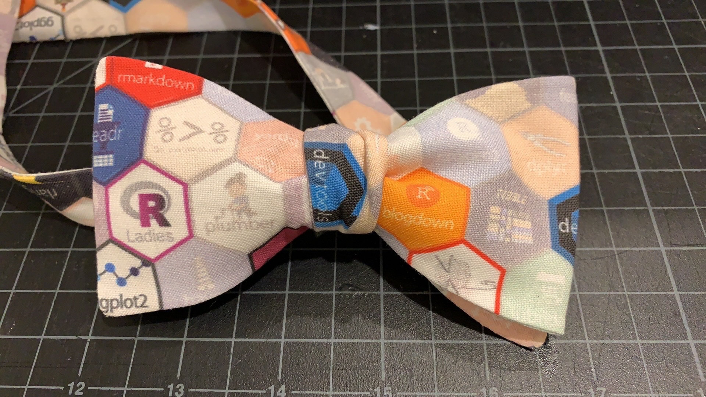
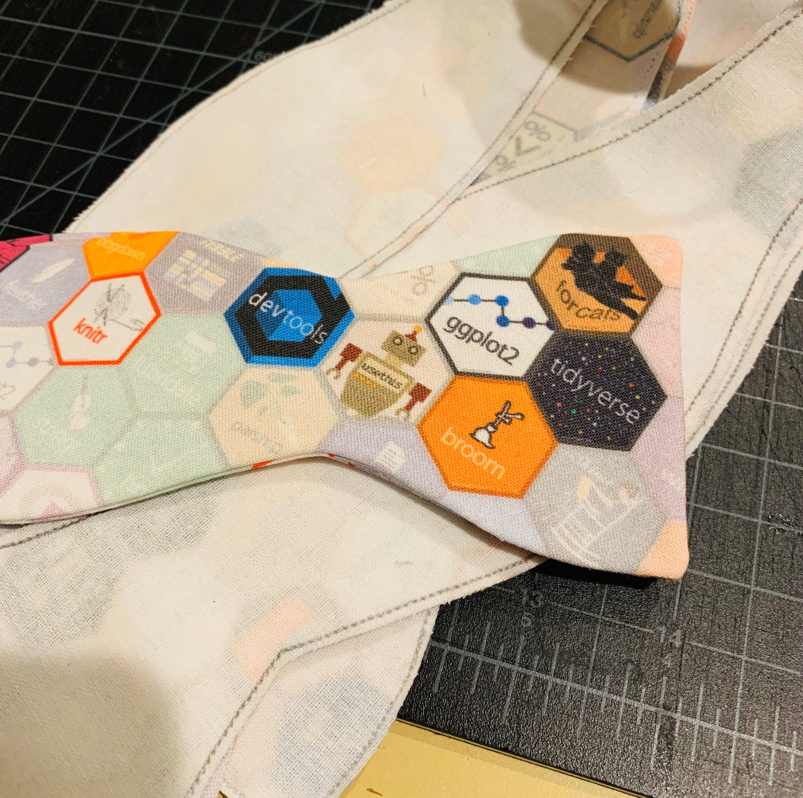

Bow Ties are Cool
The R hex fabric is by Amelia McNamara, which you can get on the GitHub repo or buy directly on her Spoonflower page
Now that the cat’s out of the bag 😻… Yes, I made myself an #rstats/#tidyverse dress!
— AmeliaMN (@AmeliaMN) August 16, 2019
📸 @alexandrabyrne with the angles pic.twitter.com/6m1nJotIwN
For my particular use case, I needed smaller hexes because bow ties are just smaller than dresses. Here’s my modified 1-inch r hex fabirc
I knew I wanted to make bowties since I gave a lightning talk during RStudio internship. And Hadley is a bow tie aficionado. After talking to a few people, I was directed to get them made on Etsy, and so the hunt to find someone began in November.
The tricky part about finding custom bow ties on Etsy is that many of the
sellers don’t make adjustable bow ties.
I eventually found
Megan’s
Shop,
which allowed me to get adjustable bowties and use custom fabric.
I placed an order for 20 with the only constraint of one of the bow ties
must have ggplot2 and tidyverse visiable when it is tied (for Hadley).
This is when Megan told me about the original hex size needed to be smaller
for the bow tie.
I also got a few pocket squares in my order too.
I went though the process of creating the smaller hex pattern on Spoonflower and shipeed 6 yards of the pattern for my order in the “Petal Signature Cotton”. I had to ship Megan the fabric directly since you need to order a test sample before other people can purchace the pattern. It was a gamble, but it was the holiday season, and the conference was coming up fast.
Megan was great, I got a series of photos about the entire process.

The fabric is thicker than what I have used previously as spoonflower recently changed to the ‘petal cotton’. I’m just retooling the pattern and interfacing a bit to accommodate it. :)


Also- here is how the one tie with the prominent ggplotand tidyverse was cut out.
I got the order 2 weeks before the conference and it all turned out wonderfully.

Here’s the link to her shop and twitter. I even convinced her to write a blog post of her own .